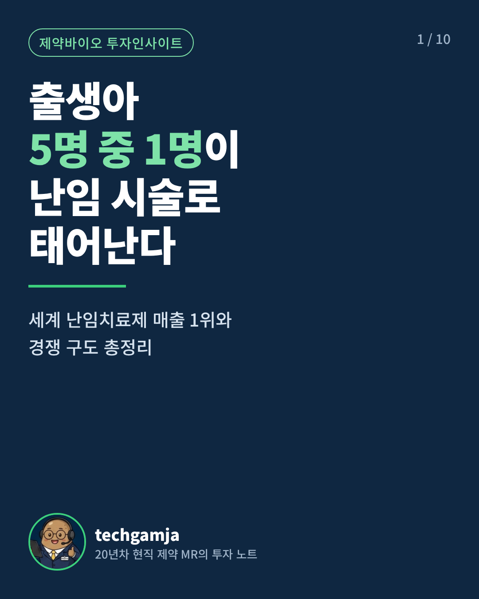
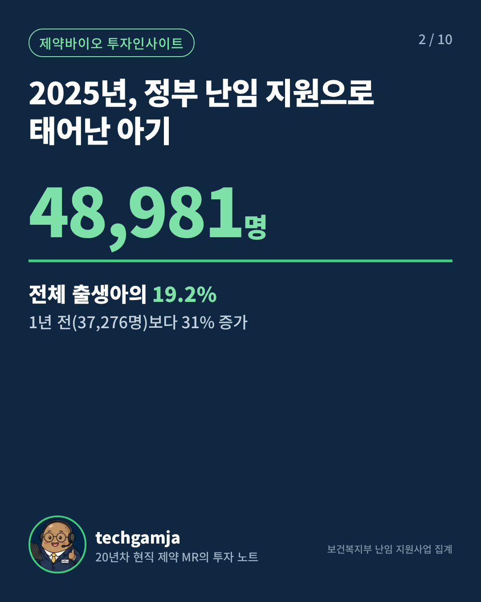
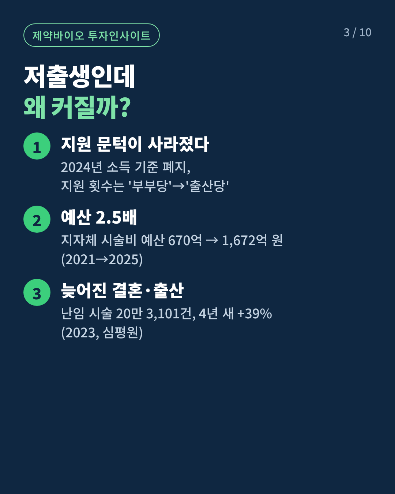
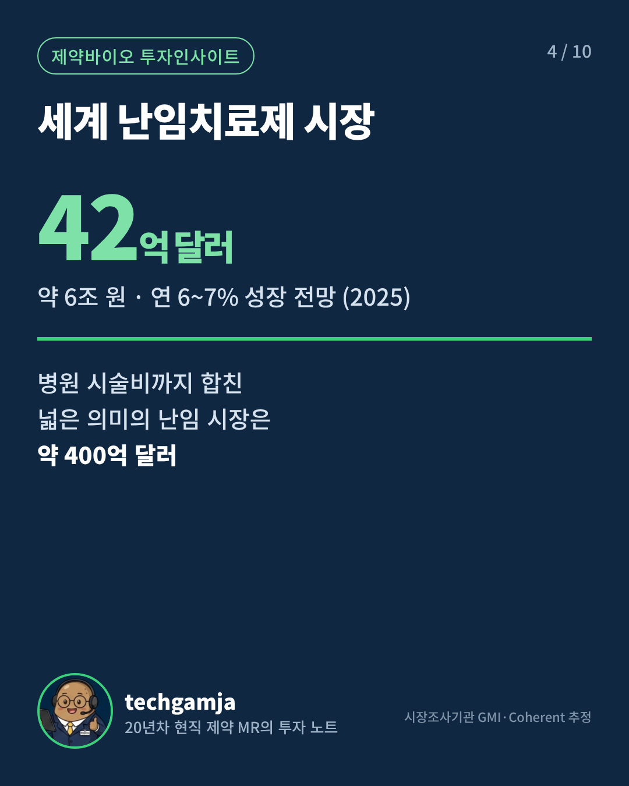
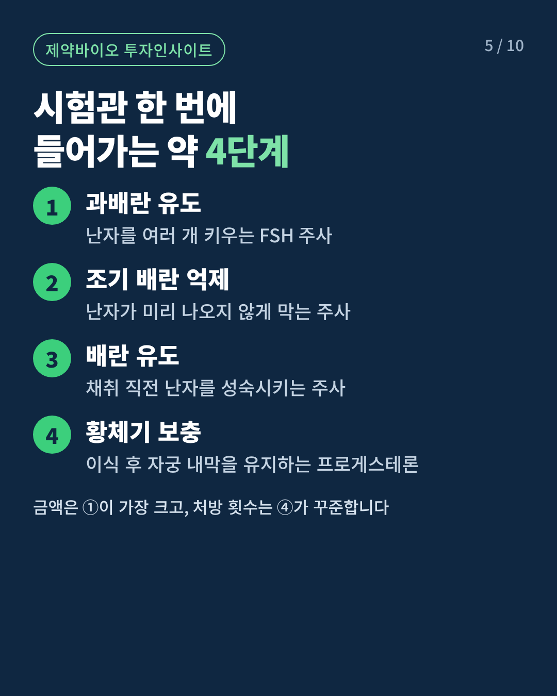
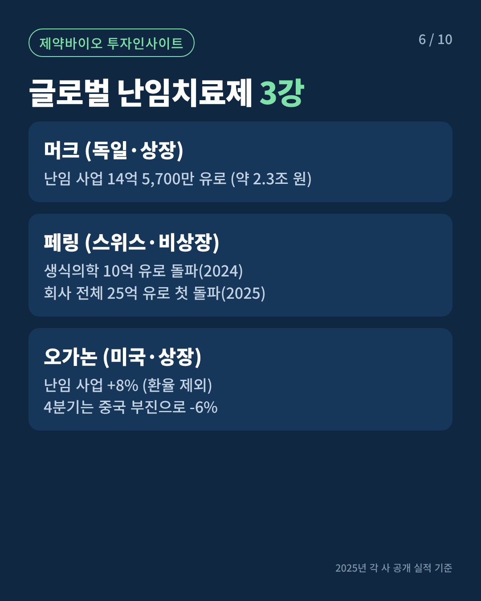
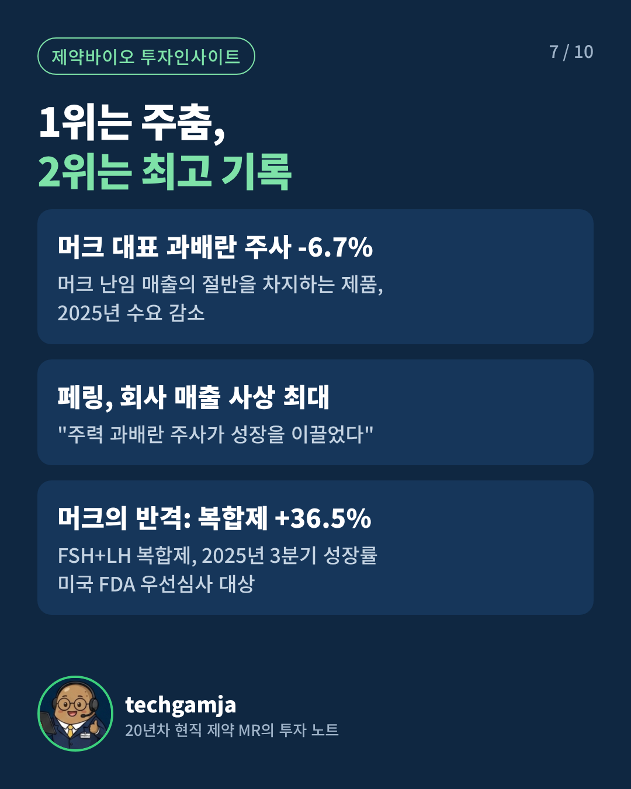
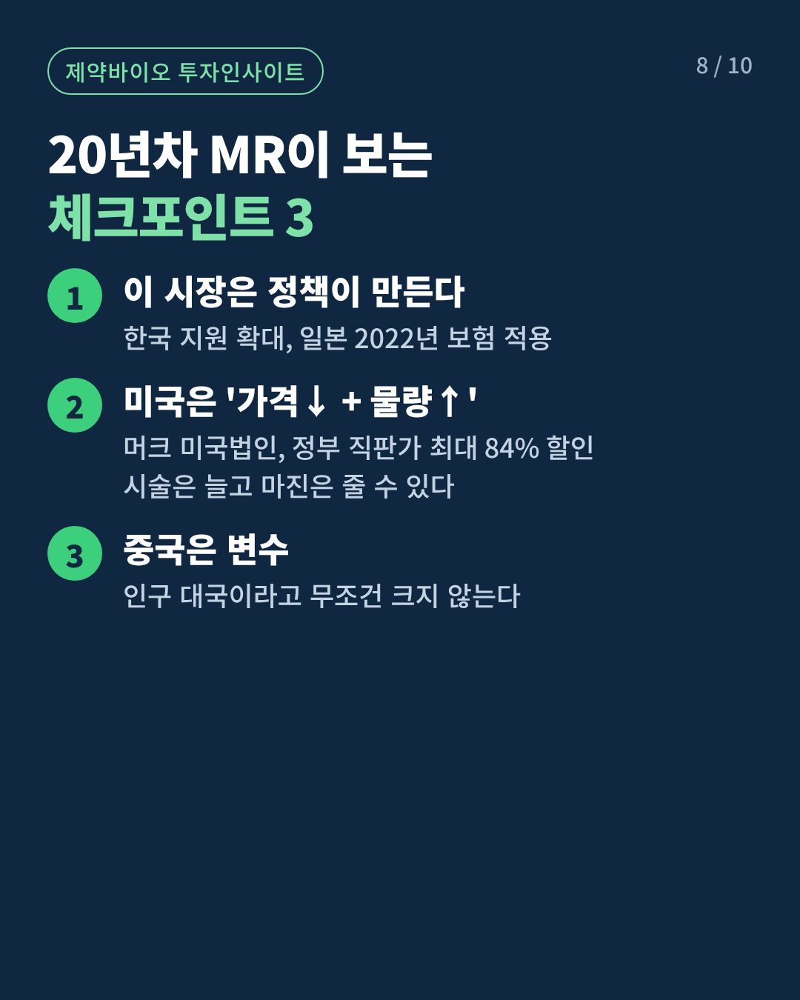
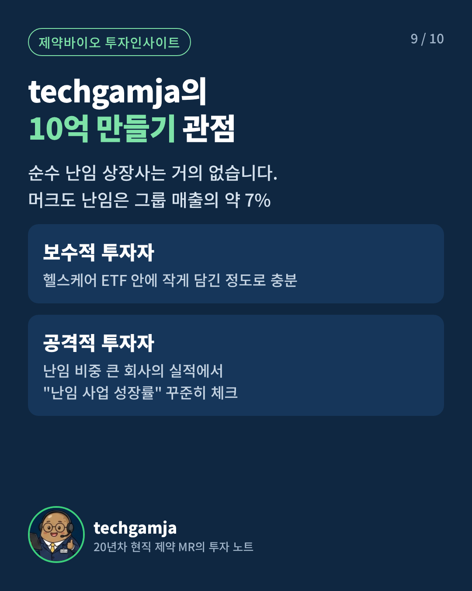
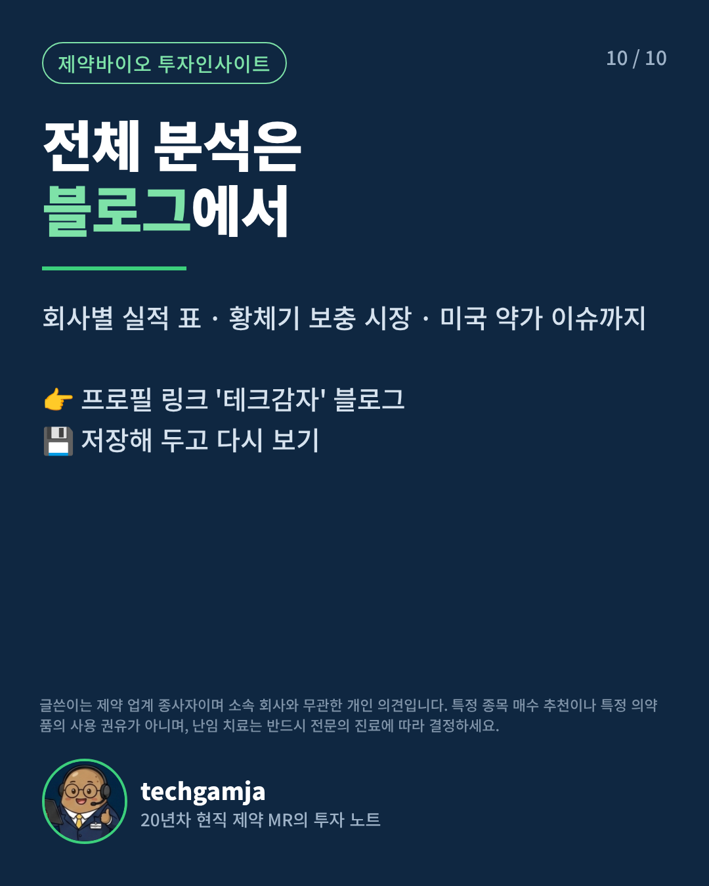

카드뉴스 10장(4:5), 쇼츠 영상 38초(9:16), 캡션·해시태그·내레이션 대본을 한곳에 모았어요. 이미지는 길게 눌러 저장할 수 있어요.
① 인스타 카드뉴스 10장 · 1080×1350
인스타 피드에서 가장 크게 보이는 4:5 비율. 순서대로 한 게시물(캐러셀)에 올리세요.










② 쇼츠·릴스 영상 · 1080×1920 · 38초
무음 영상이에요. 아래 대본으로 목소리(또는 캡컷 AI 음성)와 음악을 얹어 올리세요.
③ 인스타 캡션
출생아 5명 중 1명이 난임 시술로 태어납니다 👶
저출생인데 거꾸로 커지는 시장, 난임치료제를 정리했어요.
✔ 2025년 정부 지원 출생아 4만 8,981명 (1년 새 +31%)
✔ 세계 난임치료제 시장 약 42억 달러, 연 6~7% 성장
✔ 독일 머크 · 스위스 페링 · 미국 오가논 3강 구도
1위는 주춤하고 2위는 최고 기록을 쓰는, 지금 가장 흥미로운 구간입니다.
📌 카드를 넘겨 보고 저장해 두세요
📖 회사별 실적 표까지 담은 전체 분석은 프로필 링크 블로그에서
글쓴이는 제약 업계 종사자이며, 소속 회사와 무관한 개인 의견입니다. 특정 종목 매수 추천이나 의약품 사용 권유가 아니며, 난임 치료는 전문의 진료에 따라 결정하세요.
저출생인데 이 시장은 커집니다. 소득 기준 폐지, 예산 2.5배, 시술은 4년 새 39% 증가.
0:13–0:18
세계 난임치료제 시장은 약 6조 원, 매년 6~7%씩 자라고 있습니다.
0:18–0:23
이 시장은 독일 머크, 스위스 페링, 미국 오가논이 이끌고 있는데요.
0:23–0:28
1위 머크의 대표 제품은 6.7% 줄었고, 2위 페링은 사상 최대 매출을 냈습니다.
0:28–0:33
그런데 투자는 쉽지 않습니다. 순수하게 난임만 하는 상장사가 거의 없거든요.
0:33–0:38
20년차 제약 MR의 전체 분석은 프로필 링크 블로그에서 확인하세요.
작년 우리나라 아기 5명 중 1명은 난임 시술로 태어났습니다.
정부 지원으로 태어난 아기만 4만 9천 명 가까이, 1년 새 31% 늘었죠.
저출생인데 이 시장은 커집니다. 소득 기준 폐지, 예산 2.5배, 시술은 4년 새 39% 증가.
세계 난임치료제 시장은 약 6조 원, 매년 6~7%씩 자라고 있습니다.
이 시장은 독일 머크, 스위스 페링, 미국 오가논이 이끌고 있는데요.
1위 머크의 대표 제품은 6.7% 줄었고, 2위 페링은 사상 최대 매출을 냈습니다.
그런데 투자는 쉽지 않습니다. 순수하게 난임만 하는 상장사가 거의 없거든요.
20년차 제약 MR의 전체 분석은 프로필 링크 블로그에서 확인하세요.
한 장면에 4~5초라 조금 빠르게 읽어야 해요. 캡컷에서 장면 길이를 늘려도 됩니다.
⑤ 유튜브 쇼츠 제목·설명
출생아 5명 중 1명이 난임 시술로? 저출생인데 커지는 시장 #shorts
저출생인데 거꾸로 커지는 난임치료제 시장, 20년차 현직 제약 MR이 숫자로 정리했습니다.
전체 분석(회사별 실적 표·미국 약가 이슈): 네이버 블로그 '테크감자'
※ 개인 의견이며 투자 추천·의약품 사용 권유가 아닙니다.
#난임 #시험관 #저출생 #제약바이오 #헬스케어투자 #테크감자
⑥ 올리는 순서
1. 인스타 프로필 정리 — 프로필 링크에 네이버 블로그 주소를 넣고, 소개에 "20년차 현직 제약 MR의 투자 노트"를 적어 두세요. 게시물 링크는 클릭이 안 돼서 프로필 링크로 보내야 해요.
2. 카드뉴스 올리기 — 인스타 앱 + 버튼 → 게시물 → 사진 10장을 순서대로 선택 → 비율 4:5 확인 → ③ 캡션·해시태그 붙여넣기.
3. 쇼츠 영상 다듬기 (캡컷 무료) — 영상 불러오기 → 텍스트 → '텍스트 음성 변환'에 ④ 대본 붙여넣기(또는 직접 녹음) → 오디오에서 저작권 없는 음악 추가 → 1080p로 내보내기.
4. 릴스·쇼츠 동시 배포 — 같은 영상을 인스타 릴스와 유튜브 쇼츠에 각각 올리세요. 유튜브는 ⑤ 제목에 #shorts를 넣어 두었어요.
5. 예약 발행 — 메타 비즈니스 스위트(무료)를 쓰면 인스타 게시물·릴스를 원하는 시간에 예약할 수 있어요. 블로그 발행 다음 날 오전 7~9시나 저녁 8~10시를 추천해요.
6. 블로그와 연결 — 블로그 글 하단에 "인스타 카드뉴스로도 볼 수 있어요" 한 줄과 인스타 주소를 넣으면 서로 유입이 돌아요.
주의할 점
⚠ 전문의약품 광고 규제: 약사법상 전문의약품은 일반인 대상 광고가 금지돼요. 블로그보다 SNS가 '광고'로 보일 위험이 더 커서, 카드·영상·캡션에서 약 제품명을 빼고 회사명과 '과배란 주사' 같은 일반 명칭만 썼어요.
⚠ 업계 종사자 표기: 현직 MR이라는 점이 신뢰를 주지만, 담당 제품과 관련된 글이라면 이해관계를 밝히고 회사의 SNS 활동 규정도 꼭 확인하세요.
⚠ AI 이미지 표기: 마스코트 외에 AI 이미지를 추가로 쓰면 인스타의 'AI 정보' 라벨을 켜 주세요.
다음 글부터는
블로그 원고를 만들 때 "카드뉴스·쇼츠도 같이"라고 말씀해 주시면, 같은 디자인으로 이 키트까지 한 번에 만들어 드릴게요. 중간선거·옵토닉스·서킷브레이커·젠슨 황 원고도 같은 방식으로 바꿀 수 있어요.